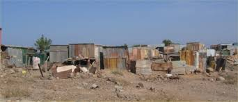
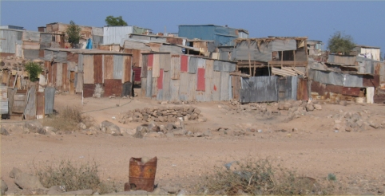
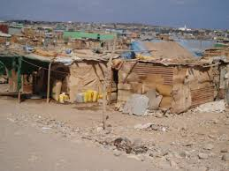

<!DOCTYPE html>

<meta name="robots" content="noindex">
<html>

<head>
  <meta name="description" content="Leaflet Template">
  <title>Simple Map</title>
  <meta name="viewport" content="initial-scale=1.0">
  <meta charset="utf-8">
  <link rel="stylesheet" href="https://unpkg.com/leaflet@1.3.1/dist/leaflet.css" integrity="sha512-Rksm5RenBEKSKFjgI3a41vrjkw4EVPlJ3+OiI65vTjIdo9brlAacEuKOiQ5OFh7cOI1bkDwLqdLw3Zg0cRJAAQ==" crossorigin="" />
  <link rel="stylesheet" href="https://unpkg.com/leaflet.markercluster@1.3.0/dist/MarkerCluster.css" />
  <link rel="stylesheet" href="https://unpkg.com/leaflet.markercluster@1.3.0/dist/MarkerCluster.Default.css" />

  <script src="https://unpkg.com/leaflet@1.3.1/dist/leaflet.js" integrity="sha512-/Nsx9X4HebavoBvEBuyp3I7od5tA0UzAxs+j83KgC8PU0kgB4XiK4Lfe4y4cgBtaRJQEIFCW+oC506aPT2L1zw==" crossorigin=""></script>

<link rel="stylesheet" href="style/style.css" />

  <!-- Overview-->
  <link rel="stylesheet" href="libs/overview/MiniMap.css" />
  <script src="libs/overview/MiniMap.js"></script>

  <!-- GeoCoder-->
  <link rel="stylesheet" href="libs/Control.OSMGeocoder.css"/>
  <script src="libs/Control.OSMGeocoder.js"></script>

    <!-- Localisation-->
  <link rel="stylesheet" href="libs/L.Control.Locate.min.css" />
    <script src="libs/L.Control.Locate.js"></script>

   <!-- Mouse position-->
  <link rel="stylesheet" href="libs/L.Control.MousePosition.css" />
    <script src="libs/L.Control.MousePosition.js"></script>

    <!-- Navigation Bar-->
    <link rel="stylesheet" href="libs/NavBar/NavBar.css"/>
  <script src="libs/NavBar/NavBar.js"></script>
  
  <!-- jQuery - indispensable pour utiliser les fichiers geojson -->
  <script src="https://code.jquery.com/jquery-3.1.1.min.js"></script> 


  <script src="https://unpkg.com/leaflet.markercluster@1.3.0/dist/leaflet.markercluster.js"></script>
<style id="jsbin-css">
/* Always set the map height explicitly to define the size of the div
 * element that contains the map. */
#map {
  height: 100%;
}
/* Optional: Makes the sample page fill the window. */
html, body {
  height: 100%;
  margin: 0;
  padding: 0;
}
</style>
</head>

<body>
  <div id="map"></div>
<script id="jsbin-javascript">
var addressPoints = [
  [11.554868,43.123161 , (customPopup = "<b>Balbala , zone 2<br/<br/>")],
  [11.550921, 43.120949,(customPopup = " <br/<br/><b>Balbala  zone 3"),],
  [11.553115,  43.119252, (customPopup = "<b>Balbala , zone 1<br/<br/>"),],
  [11.556298, 43.117883, (customPopup = "<b>Balbala , zone 4<br/<br/>")]
]

var map = L.map('map').setView([11.5806, 43.1457], 13);

var baselayers = {
Plan: L.tileLayer('http://{s}.tile.openstreetmap.org/{z}/{x}/{y}.png'),
Satellite: L.tileLayer('http://server.arcgisonline.com/ArcGIS/rest/services/World_Imagery/MapServer/tile/{z}/{y}/{x}')};
baselayers.Plan.addTo(map);

//// Add the Find to the map
var osmGeocoder = new L.Control.OSMGeocoder();
map.addControl(osmGeocoder);

///// Add the Overview to the map 
var osm2 = L.tileLayer('http://{s}.tile.openstreetmap.org/{z}/{x}/{y}.png');
var miniMap = new L.Control.MiniMap(osm2, { toggleDisplay: true }).addTo(map);

///// Add the mouse position to the map 
L.control.mousePosition().addTo(map);

///// Add the Navigation Bar to the map ( home, right, left )
L.control.navbar({position: 'topleft'}).addTo(map);

///// Add the geolocate control to the map ( geolocation marker )
L.control.locate().addTo(map);

// Ajouter l'echellecartographique
L.control.scale().addTo(map);

map.attributionControl.addAttribution('Moustapha & Farhan');


var route = $.getJSON("route.geojson",function(dataroute)
          {L.geoJson( dataroute, 
            {style: function(feature)
              { 
              // paramétrage de la symbologie de la couche "route"
              return { color: "#FF1411", weight: 2, fillColor: '#000000', fillOpacity: .10};
              },
    onEachFeature: function( feature, layer )
        {
        // paramétrage de la popup de la couche "route" 
        layer.bindPopup( "<b><u>Description de la route</u></b><br><b> Nom: </b>" + feature.properties.No_voie_co )
        }
    }).addTo(map);
    }); 

// Ajout d'une couche cadastre avec geoserver

    var Cadastre = L.tileLayer.wms('http://localhost:8080/geoserver/mouga/wms',
{layers: 'mouga:battt',format: 'image/png',transparent: true});

//Regroupement des couches dans marqueurs
        var marqueurs = {"Cadastre": Cadastre};


var markers = L.markerClusterGroup();

for (var i = 0; i < addressPoints.length; i++) {
  var a = addressPoints[i];
  var title = a[2];
  var marker = L.marker(new L.LatLng(a[0], a[1]), {
    title: title
  });
  marker.bindPopup(title);
  markers.addLayer(marker);
}

map.addLayer(markers);


// Reglage du controleurs des couches
L.control.layers(baselayers, {' Photo': markers,' Cadastre': Cadastre,},{collapsed:false}).addTo(map);

</script>
</body>

</html>